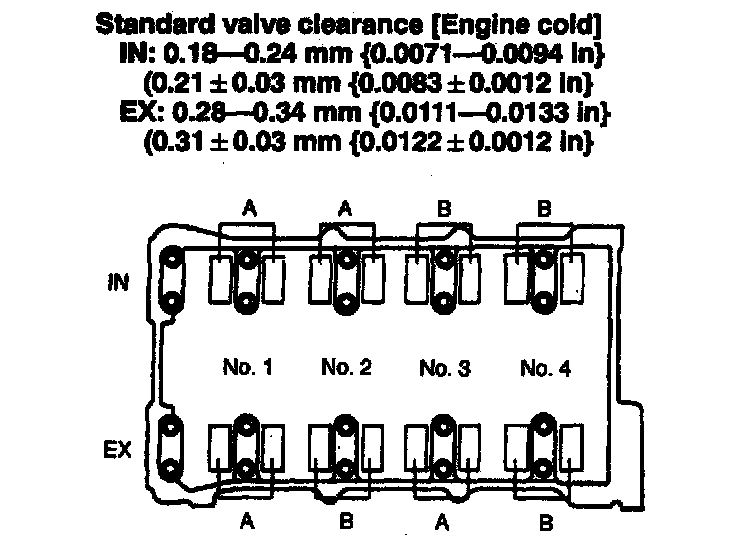
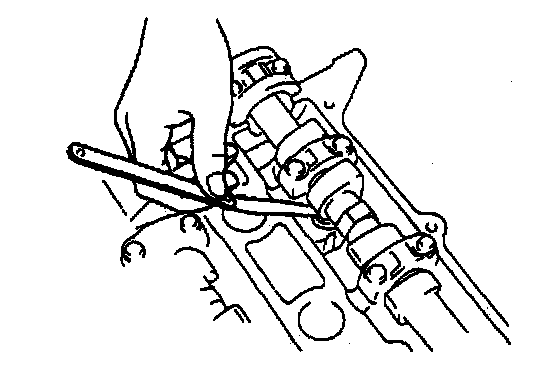

Valve Clearance Inspection
Valve Clearance Inspection
1. Remove the cylinder head cover.
2. Verify that the engine is in cold condition.
3. Measure the valve clearance.
1) Turn the crankshaft clockwise so that the No.1 piston is at TDC of the compression stroke.


2) Measure the valve clearance at A in the figure.
3) If the valve clearance exceeds the standard, replace the adjustment shim.
4) Turn the crankshaft 360° clockwise so that the No.4 piston Is at TDC of the compression stroke.
5) Measure the valve clearance at B in the figure.
Standard valve clearance [Engine cold]
IN: 0.18 - 0.24 mm (0.0071 - 0.0094 inch) (0.21 ± 0.03 mm (0.0083 ± 0.0012 inch)
EX: 0.28 - 0.34 mm (0.0111 - 0.0133 inch) (0.31 ± 0.03 mm (0.0122 ± 0.0012 inch)
6) If the valve clearance exceeds the standard, replace the adjustment shim.
4. Install the cylinder head cover.